耕而不缀 · 墨而不染 · 行稳致远 · 久久为功
深圳公司深耕本土业务，香港设立公司以便链接国际业务，形成境内外协同的服务网络。
公司成立于 2018 年，初始专注于智能无线传输领域，深耕数年积累客户资源，并围绕这些应用不断发展新的产品线。
公司呈扁平化管理，沟通快速直接，合作灵活可控。以技术驱动与服务为本，与客户共同成长。
围绕无线传输与智能感知，构建六大核心产品矩阵
AMPAK Technology 成立于 2000 年，拥有超过 20 年无线模块研发与产品整合经验，是领先的综合无线与边缘 AI 解决方案提供商，在消费网络、物联网、工业控制、医疗和汽车市场推动智能与无线创新。模组以小型化邮票孔（Stamp Type）封装为主，提供 1T1R / 2T2R / RSDB 多种架构，涵盖 2.4G / 5G / 6G 三频段，并支持 LE Audio、Thread（802.15.4）与蓝牙信道探测（Channel Sounding）等前沿特性。
1T1R、2T2R 与 RSDB 多架构，SDIO / PCIe 接口，覆盖 Wi-Fi 5 / 6 / 6E / 7，蓝牙 5.3 / 6.0，支持 2.4G / 5G / 6G 三频与 LE Audio。
面向前装车载与嵌入式系统的车规级无线模块及系统级（SoM）模块，满足严苛温度与长期可靠性要求。
面向中高速物联网的 5G RedCap（降低复杂度）蜂窝模组，兼顾速率、功耗与成本，适用于工业网关、车载、CPE 与手持终端。具体型号见产品手册。
面向中高速物联网场景的 5G RedCap（Reduced Capability）蜂窝模组，在速率、功耗与成本之间取得平衡，适用于工业网关、车载前装、CPE、手持终端与资产追踪。完整型号、频段与封装规格请联系我司索要规格书。
RSDB 双路并发：AP6398S / AP6398P / AP6275HH3 / AP6682SR3 / AP6684P 等支持 Real Simultaneous Dual Band，Station 与 SoftAP 并发无延迟、不降吞吐；LE Audio 支持 Auracast（BIS）与立体声（CIS）；Thread 边界路由：AP6281S / AP6612X 集成 802.15.4，可用作 Matter / Thread Border Router；蓝牙信道探测（Channel Sounding） 提供高精度测距能力。
在机器人方向，正基已推出工业等级Wi-Fi/Bluetooth模组及5G RedCap模组解决方案，目标就是让人形机器人实现更细腻的感测与协作控制。总經理魏瀅洳也明确将机器人市场列为重点方向，评估其规模到2030年有望突破40亿美元
覆盖射频前端芯片、射频 SoC 芯片与其他模拟芯片三大产品线。点击下列产品线可展开查看具体型号参数与选型推荐。
面向蜂窝与无线通信的高集成射频前端模组，覆盖 4G / 5G 及卫星通信场景。
超低功耗蓝牙 SoC，分级布局从入门到旗舰，全系列支持 2.4GHz 私有协议，工作温度 -40℃ ~ +85℃。
| 型号 | 蓝牙版本 | 内核 / 主频 | SRAM | Flash | 供电 | 封装 / GPIO | 定位 |
|---|---|---|---|---|---|---|---|
| OM6626B | BLE 5.3 | Cortex-M4 @64MHz | 80KB | — | 1.71–3.6V | QFN32 / 25 | 入门级 |
| OM6627C | BLE 5.4 | Cortex-M4F @96MHz | 128KB | — | 1.71–3.6V | QFN48 / 38 | 中高端 |
| OM6629C | BLE 5.4 | Cortex-M4F @96MHz | 256KB | 1MB | 1.71–3.6V | QFN48 / 38 | 旗舰 |
高性价比基础款。推荐：蓝牙遥控器、简易传感器、电子价签、基础数传。
带 FPU 与音频 / USB 外设，shelf 低功耗约 200nA。推荐：蓝牙耳机、智能门锁、HID 人机设备。
旗舰，TX +10dBm / RX -100dBm@1Mbps，SHA256 安全启动，支持 PAwR。推荐：高端穿戴、工业采集器、CGM、电子价签。
注：具体 Flash 容量与电气参数以昂瑞微官方规格书（Datasheet）为准；以上选型推荐仅供应用参考。
上海申矽凌微电子科技股份有限公司（Sensylink）成立于 2015 年，专注高性能传感器与混合信号芯片，已量产 500+ 款完全自主知识产权产品，覆盖温度、温湿度、数字接口、电源监测、热管理与车规等丰富品类。立足中国、服务全球，将创新的传感器技术与成熟的集成电路工艺相结合，设计出高集成度、高精度、微体积、低功耗的芯片产品。公司获评国家级高新技术企业、上海市专精特新「小巨人」及「市级企业技术中心」；截至 2022 年累计出货量突破 5 亿颗，产品广泛应用于消费电子、通讯、汽车与工业领域。
温度（CT7117、CT1711），温度精度±0.1℃。应用于智能穿戴体温监测、智慧家电、冷链运输、笔记本多点测温，以及 SSD/相机微型温度保护。
数字温湿度一体传感器（CHT8315、CHT8555），湿度精度 ±3.0%RH、温度 ±0.5℃，低压低功耗，性能媲美国际大厂盛思锐。广泛用于智慧家电、冷链与疫苗箱运输监控、工业/机房环境监测。
GPIO 扩展（CA95xx）、I2C 开关/多路复用、电平转换器（CAG，自动方向）、I3C Hub 与总线缓冲；以及电压/电流/功率监控（CAD2726）、风扇控制（CTF230X）、RTC、热电偶调理、加密认证（CSA）与车规级 -Q 产品。覆盖工控 IO 扩展、多传感器总线、多电压域、充电器计量、服务器散热、电池/耗材防伪与车载温度监测。
完全自主知识产权，500+ 款成熟量产型号；高精度（温度 ±0.1℃、湿度 ±3%RH）、低功耗与微型化设计，适配空间受限与便携设备；覆盖「传感 + 接口 + 电源监测 + 热管理 + 安全 + 车规」的完整组合，提供硬件 + 算法的一站式方案。
物奇微电子（重庆物奇微电子股份有限公司）成立于 2016 年，定位为「领先的网络通信与端侧智能芯片设计公司」（标语：智连万物，奇芯闪耀）。公司深耕短距通信与端侧智能的深度融合，构建起高带宽低时延通信、超低功耗数模混合芯片设计、端侧多模态 AI 算法三大核心能力，形成「连接中枢 + 端侧入口」双轮驱动的业务方向，在上海、重庆等 5 大城市设有研发中心，已为国内外众多知名客户提供一流的系统级（SoC）芯片方案。
围绕 BT / Wi-Fi / PLC / AI 四大技术标签，物奇构建高速率 Wi-Fi 芯片、智能音频主控芯片、PLC 电力线载波芯片、智能视觉处理芯片四大核心产品线，覆盖从无线连接到端侧智能的完整布局。产品广泛应用于物联网、消费电子、电力能源与网络通信四大市场，业务涵盖高速网络、智能穿戴、机器视觉、电力物联网等多元场景，性能与品质均处于业内领先地位。
高性能及低功耗 Wi-Fi 芯片，支持 Wi-Fi 6 标准、2×2 MIMO 与 BT Combo，提供全场景千兆带宽，应用于家庭网络、智慧大屏、网络摄像头等。
领先的低功耗 RISC-V 架构设计，内置低功耗蓝牙（BT）主控平台，为 TWS、OWS 与智能眼镜提供高品质音频 SoC。
由窄带向宽带载波（HPLC）演进，符合国网 / 南网标准，应用于电网集抄、智能配网、智能光伏与智能照明。
端侧多模态 AI 算法赋能，NPU 算力达 200G OPS，支持 3D 结构光 / TOF / 双目视觉，让 MCU 具备 3D 感知能力。
国际大厂级指标：TxEVM、Rx Sensitivity 等关键指标均已实测，达到国际领先水平；自研低功耗 PA：突破性的自研 PA 架构降低 60% 功耗，典型场景节省约 1W 功耗；RISC-V + 安全 NPU：多核 RISC-V 架构与自研 NPU（INT8 算力 200G OPS）提供高能效端侧 AI；PLC 领先：链路预算 120dB、接收灵敏度 -95dBm，行业首创 4 合 1；自主可控与车规：10 年深耕、5 大研发城市，Wi-Fi AP 芯片获工信部自主可控认证，STA 芯片通过 AEC-Q100 车规级认证。
三伍微（GSR Micro）成立于 2018 年 11 月，核心团队源自 RDA（锐迪科）射频前端（FEM）团队，是专注 Wi-Fi / IoT 射频前端芯片的 Fabless 设计企业。公司在晋江、上海、台湾、深圳设有研发与运营中心，员工近 100 人、研发占比 65%，核心成员为射频前端资深专家及福州大学微电子学院团队。凭借完整的射频前端产品线与极致的性能、成本，三伍微位居国内 Wi-Fi FEM 前三，获国家大基金晋江子基金投资，并被评为国家高新技术企业、福建省「专精特新」企业。其中，IoT FEM（蓝牙 / ZigBee / Wi-Fi 物联网射频前端）是三伍微重点发力的核心市场。
围绕蓝牙（BT）、ZigBee 与 Wi-Fi IoT 场景，三伍微将 IoT FEM 作为主攻方向，提供高集成度 PA+LNA+Switch 单芯片方案，覆盖 2.4G 与 5.8G ISM 频段，兼顾高功率（最高 30.5dBm）与超低功耗（1.8V / 低电流）两条产品路线，P2P 兼容 Skyworks SKY66405、RFX2401 等主流料号。产品广泛应用于智能家居、智能照明、智能门锁、无线摄像头、可穿戴、无人机与 LoRa / ZigBee 模块，以极致的性能与成本助力海量物联网终端快速量产，是公司当前规模最大、增长最快的业务板块。
面向蓝牙 / ZigBee / Wi-Fi IoT 的高集成射频前端，覆盖 2.4G 与 5.8G ISM，提供超低功耗到 30.5dBm 高功率的完整方案，是公司主推品类。
覆盖 Wi-Fi 4/5/6/6E/7，按应用场景分为网通端（路由器）与手机端，提供 2.4G、5.8G 与 6G 全频段射频前端模组。
SPDT / SP3T / DPDT 等多种拓扑，0~8GHz 宽频覆盖，QFN / SC70 / LGA 小型化封装，P2P 兼容主流料号。
低噪声系数（NF 低至 0.3dB）、高增益 LNA 与集成 SP2T+LNA 的 RX FEM，满足 2.4G 与 5.1~7.125G 接收链路需求。
面向 Wi-Fi / 蓝牙频段的滤波器与双工器，小型化 1.1×0.9mm 封装，支持 W-LAN 与 Bluetooth 共频段隔离。
IoT FEM 领跑者：以蓝牙 / ZigBee / Wi-Fi IoT 射频前端为主战场，提供从超低功耗到 30.5dBm 高功率的完整方案，是国内 IoT FEM 品类最全的供应商之一；完整射频前端矩阵：覆盖 2.4G / 5.8G / 6G 与 Wi-Fi 4/5/6/6E/7，并提供 FEM、RF Switch、LNA / RX FEM、Filter & Diplexer 全系列；极致性能与成本：国内 Wi-Fi FEM 前三，P2P 兼容 Skyworks / Qorvo / RTC 等主流料号；先进工艺与供应链：GaAs / SOI 工艺，搭配晶圆厂与自建测试中心（NI / Keysight / LitePoint 等顶级设备），保障一致性与交付；资质雄厚：国家高新技术企业、福建省「专精特新」、国家大基金晋江子基金投资，并通过 ISO9001 质量体系认证。
提供成熟的一站式蓝牙方案，涵盖遥控器、ADAS 预警、智能耳机等多种应用。
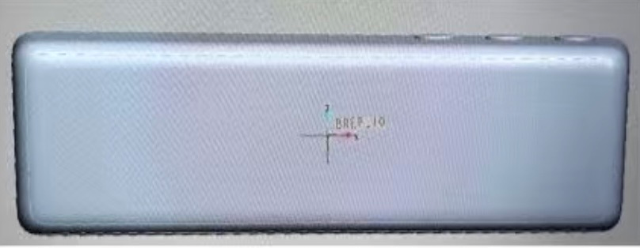
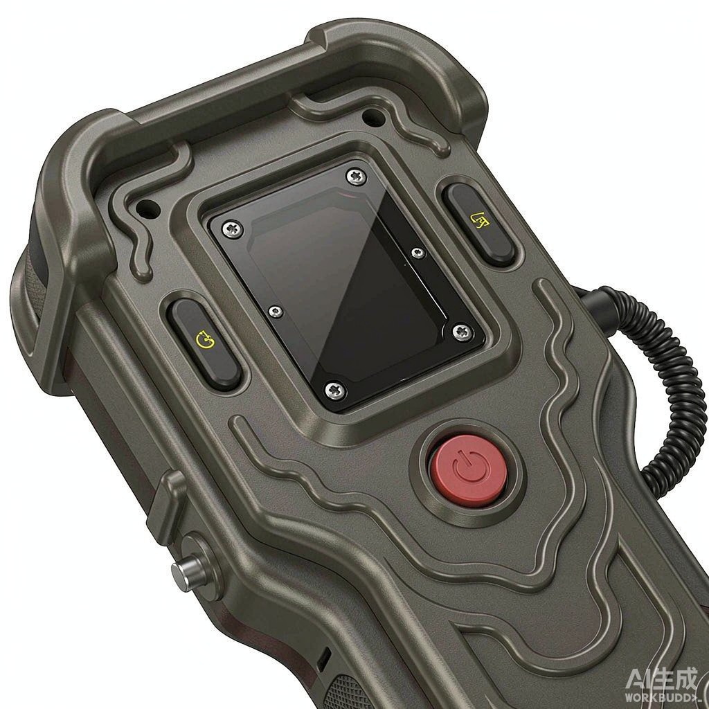
将主机 ADAS 信息与记录仪菜单通过蓝牙传输至预警器并显示。
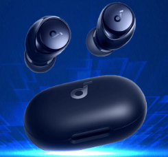
助力 ANC 耳机，超低功耗、超长续航。
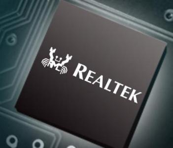
低成本、低功耗的通用蓝牙连接方案，支持灵活定制开发。
蓝牙遥控器方案、电子狗方案、蓝牙 ADAS 预警器方案；RTL8762 CMF 蓝牙芯片 + 方案、物奇蓝牙芯片 + 方案、蓝牙芯片 + 方案（Bluetooth）。
从消费电子到智能机器人，耕墨产品广泛应用于多元场景
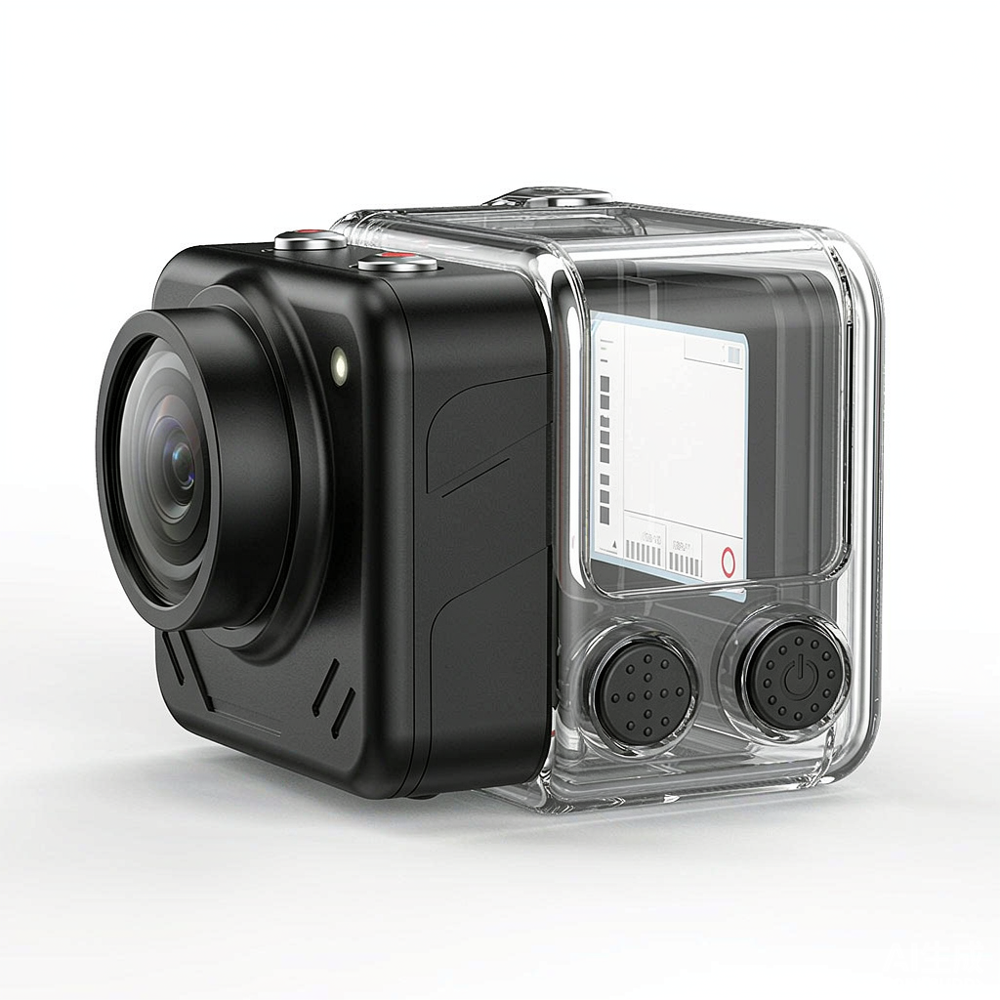
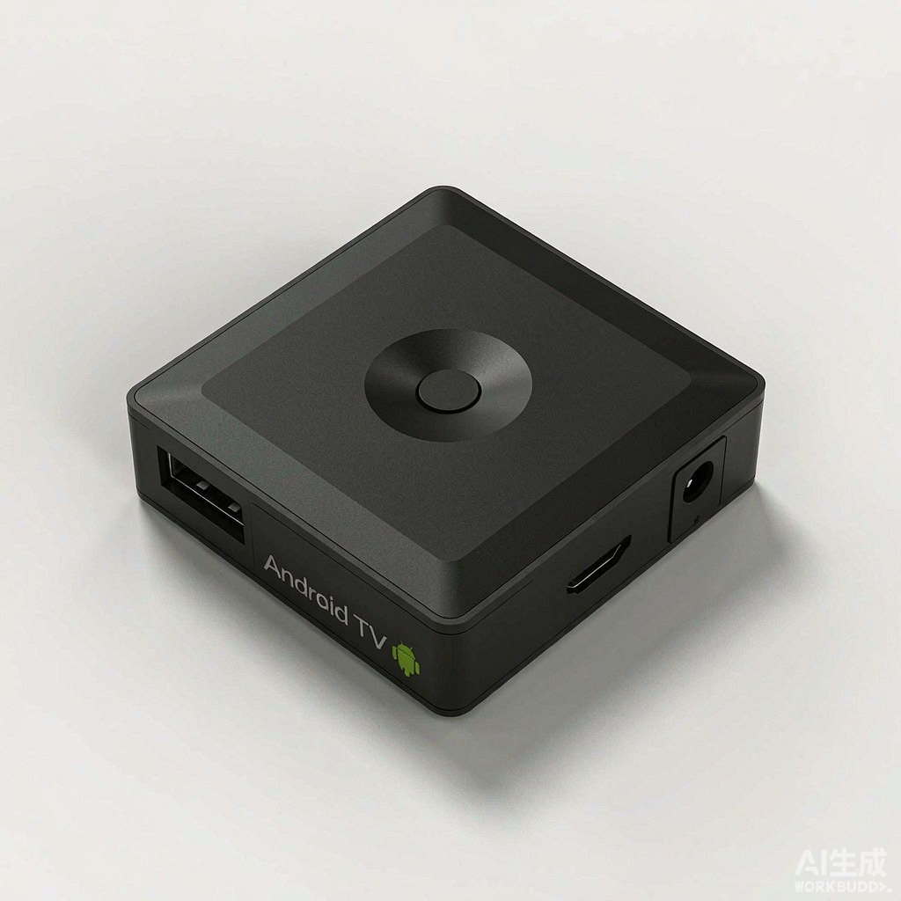
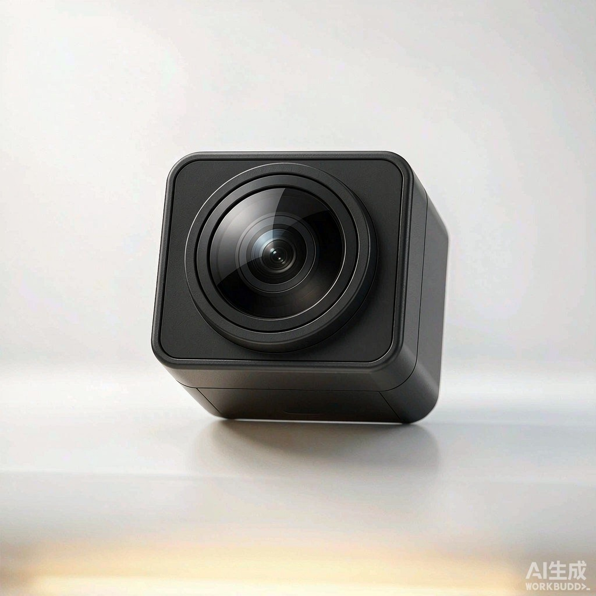
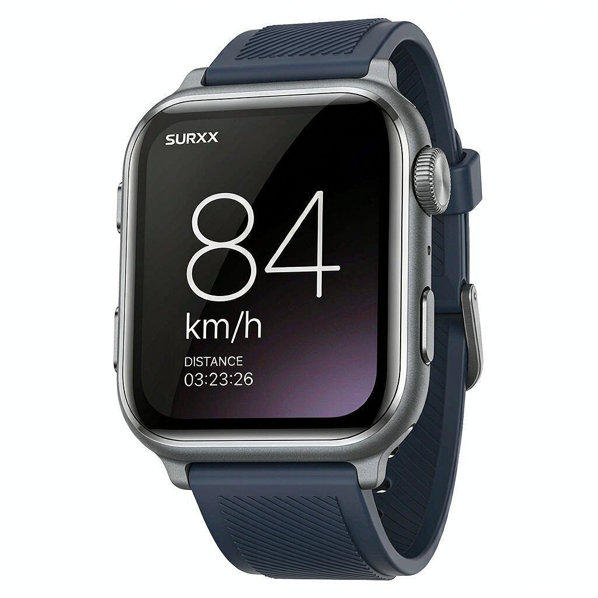
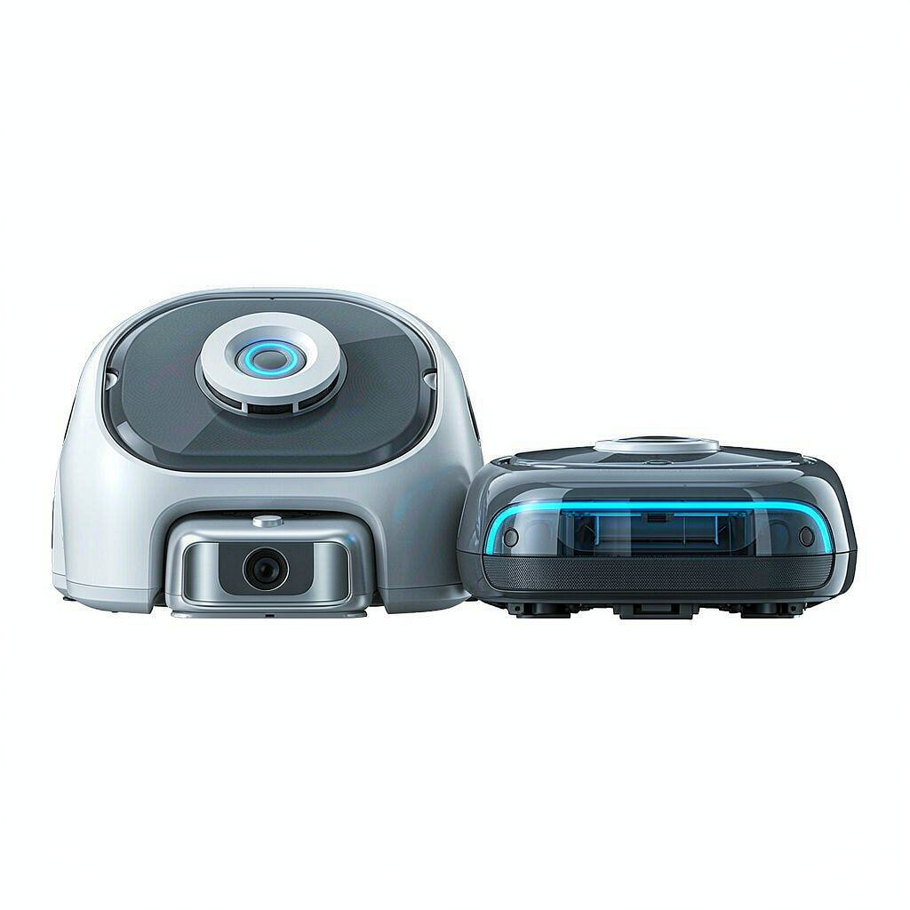
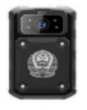
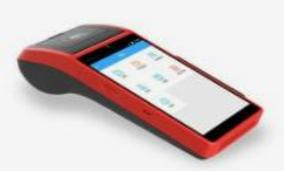
期待与您携手，连接更智能的未来。